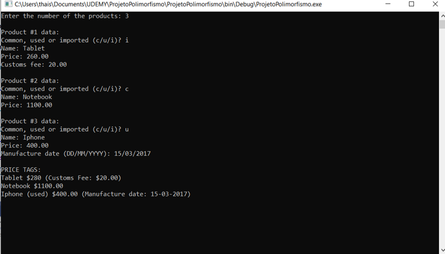
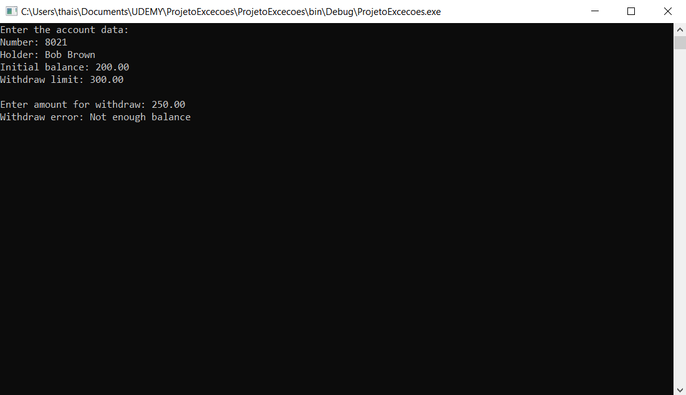
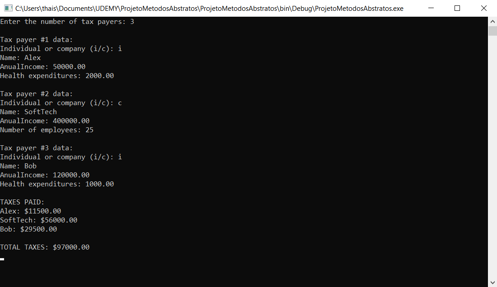

Mini Projetos C#
Esses mini projetos foram criados no intuito de colocar em prática os conhecimentos adquiridos durante o curso de C#, realizado na UDEMY. São sistemas curtos que utilizam algumas das funções mais importantes da linguagem C# que combinadas formam sistemas mais complexos de grande porte.
Trabalhando com Herança
Esse programa faz a leitura de cadastramento de produtos (utilizando uma lista), porém recebendo atributos diferentes para cada tipo de produto. A entidade Product como a classe Pai e as entidades ImportedProduct e UsedProduct como as classes filhas, que herdam os atributos da classe pai e possuem também seus próprios atributos.
Ao final, mostra a etiqueta de preço de cada produto na mesma ordem em que foram digitados.
Tratamento de exceções
O programa abaixo realiza a leitura de dados de uma conta bancária, e verifica se a tentativa de realizar um saque é permitida. Se o usuário tentar sacar mais do que o limite diário ou que possue em sua conta bancária, o sistema apresentará uma mensagem de erro, e não permitirá a continuidade da ação.
Métodos abstratos
Para colocar em prática os métodos abstratos, criei um programa para ler os dados de N contribuintes (N fornecido pelo usuário), os quais podem ser pessoa física ou pessoa jurídica, e depois mostrar o valor do imposto pago por cada um, bem como o total de imposto arrecadado.
Foi criado o metodo abstrato da entidade TaxPayer e usado a função override para sobrescrever o metodo de acordo com a necessidade de cada sub-classe.
← Voltar ao portfolio